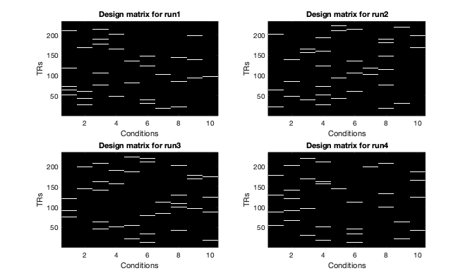
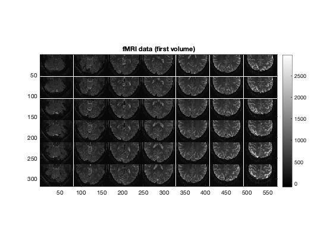
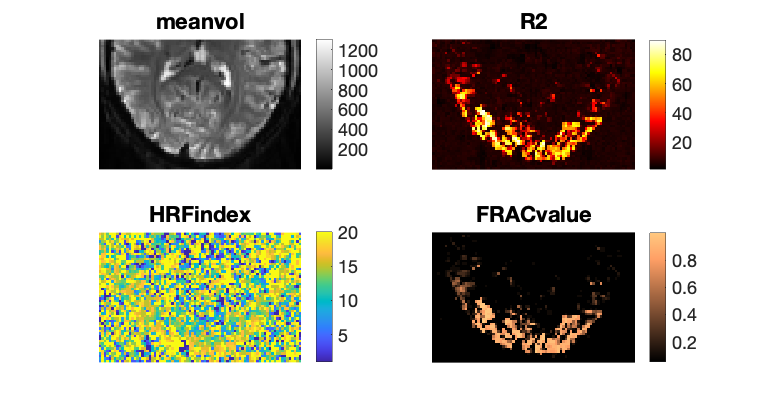
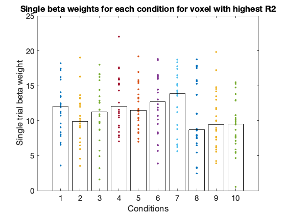

Contents
Add dependencies and download the data
addpath to GLMsingle and fracridge
addpath(genpath('./../')) addpath(genpath('/Users/jk7127/Documents/fracridge')) clear % Pick dataset datasets = {'nsdcore';'nsdfloc';'haxby'}; dataset = datasets{2}; % Download data to data directory if ~exist('./data','dir') mkdir('data') end switch dataset case 'nsdfloc' if ~exist('./data/nsdflocexampledataset.mat','file') !curl -L --output ./data/nsdflocexampledataset.mat https://osf.io/8rmjk/download end load('./data/nsdflocexampledataset.mat') case 'nsdcore' if ~exist('./data/nsdcoreexampledataset.mat','file') !curl -L --output ./data/nsdcoreexampledataset.mat https://osf.io/jqpwz/download end load('./data/nsdcoreexampledataset.mat') case 'haxby' if ~exist('./data/haxby.mat','file') !curl -L --output ./data/haxby.mat https://osf.io/f6vpq/download end load('./data/haxby.mat') end
clc whos % data -> Consists of several runs of 4D volume files (x y z t) where % (t)ime is the 4th dimention % design -> Each run has a corresponding design matrix where each colum % describes single condition (conditions are repeated across runs). Each % design matrix is binary with 1 specfing the time (TR) when stimulus is % presented on the screen. fprintf('There are %d runs in total.\n',length(design)); fprintf('The dimensions of the data for the first run are %s.\n',mat2str(size(data{1}))); fprintf('The stimulus duration is %.6f seconds.\n',stimdur); fprintf('The sampling rate (TR) is %.6f seconds.\n',tr);
Name Size Bytes Class Attributes data 1x4 662329024 cell dataset 1x7 14 char datasets 3x1 374 cell design 1x4 4640 cell stimdur 1x1 8 double tr 1x1 8 double There are 4 runs in total. The dimensions of the data for the first run are [52 81 42 234]. The stimulus duration is 4.000000 seconds. The sampling rate (TR) is 1.333333 seconds.
figure(1);clf for d = 1 : 4 subplot(2,2,d); imagesc(design{d}); colormap gray; drawnow xlabel('Conditions') ylabel('TRs') title(sprintf('Design matrix for run%i',d)) set(gca,'YDir','normal') end
figure(2);clf
imagesc(makeimagestack(data{1}(:,:,:,1)));
colormap(gray);
axis equal tight;
colorbar;
title('fMRI data (first volume)');
 Call GLMestimatesingletrial using default parameters
Outputs and figures will be stored in folder with experiment name in the current directory or saved to the results variable which is the only output of GLMestimatesingletrial
% Optional parameters below can be assigned to a variable i.e % opt by creating fields (i.e opt.wantlibrary). Options are the 6th input % to GLMestimatesingletrial. % DEFAULT OPTIONS: % wantlibrary = 1 -> Fit hRF to each voxel % wantglmdenoise = 1 -> Use GLMdenoise % wantfracridge = 1 -> Use ridge regression to improve beta estimates % chunknum = 5000 -> is the number of voxels that we will process at the % same time. For setups with lower memory deacrease this number. % wantmemoryoutputs is a logical vector [A B C D] indicating which of the % four model types to return in the output <results>. The user must be careful with this, % as large datasets can require a lot of RAM. If you do not request the various model types, % they will be cleared from memory (but still potentially saved to disk). % Default: [0 0 0 1] which means return only the final type-D model. % wantfileoutputs is a logical vector [A B C D] indicating which of the % four model types to save to disk (assuming that they are computed). % A = 0/1 for saving the results of the ONOFF model % B = 0/1 for saving the results of the FITHRF model % C = 0/1 for saving the results of the FITHRF_GLMDENOISE model % D = 0/1 for saving the results of the FITHRF_GLMDENOISE_RR model % Default: [1 1 1 1] which means save all computed results to disk. [results] = GLMestimatesingletrial(design,data,stimdur,tr,dataset);
Warning: Removed '/Users/jk7127/Documents/GLMsingle/matlab/examples/nsdfloc' from the MATLAB path for this MATLAB session. See 'doc path' for more information. *** FITTING TYPE-A MODEL (ONOFF) *** *** Saving results to nsdfloc/TYPEA_ONOFF.mat. *** *** FITTING TYPE-B MODEL (FITHRF) *** working on chunk 1 of 4. working on chunk 2 of 4. working on chunk 3 of 4. working on chunk 4 of 4. *** Saving results to nsdfloc/TYPEB_FITHRF.mat. *** *** DETERMINING GLMDENOISE REGRESSORS *** *** CROSS-VALIDATING DIFFERENT NUMBERS OF REGRESSORS *** working on chunk 1 of 4. working on chunk 2 of 4. working on chunk 3 of 4. working on chunk 4 of 4. *** FITTING TYPE-C MODEL (GLMDENOISE) *** working on chunk 1 of 4. working on chunk 2 of 4. working on chunk 3 of 4. working on chunk 4 of 4. *** FITTING TYPE-D MODEL (GLMDENOISE_RR) *** working on chunk 1 of 4. working on chunk 2 of 4. working on chunk 3 of 4. working on chunk 4 of 4.
Important outputs
R2 is model accuracy expressed in terms of R^2 (percentage). modelmd is the full set of single-trial beta weights (X x Y x Z x TRIALS) HRFindex is the 1-index of the best HRF, can be retried with getcanonicalhrflibrary(stimdur,tr) FRACvalue is the fractional ridge regression regularization level chosen for each voxel
Plot 1 slice of brain data
slice = 20; % adjust this number when using different datasets val2plot = {'meanvol';'R2';'HRFindex';'FRACvalue'}; cmaps = {gray;hot;parula;copper}; figure(3);clf for v = 1 : length(val2plot) f=subplot(2,2,v); imagesc(results{4}.(val2plot{v})(:,:,slice)); axis off image; colormap(f,cmaps{v}) % Error message is related to this line colorbar title(val2plot{v}) set(gca,'FontSize',20) end set(gcf,'Position',[1224 840 758 408])
Plot single beta weights for one voxel for all conditions
betas = results{4}.modelmd;
% locate beta weights for the same condition in beta output.
newdesign = design;
for r = 1 : length(design)
dm = full(design{r});
newdm = zeros(size(dm));
for cond = 1 : size(dm,2)
tmp = dm(:,cond) == 1;
newdm(tmp,cond) = cond;
newdesign{r} = newdm;
end
end
indx_of_beta=cell2mat(cellfun(@flatten,newdesign,'UniformOutput',false));
indx_of_beta(indx_of_beta==0) = [];
% index_of_beta should correspond to the 4th dimension of betas
[maxval,ind] = max(results{4}.R2(:));
[x,y,z] = ind2sub(size(results{4}.R2),ind);
figure(4);clf
for i = unique(indx_of_beta)
beta_ind = indx_of_beta == i;
plot(ones(sum(beta_ind),1)*i,squeeze(betas(x,y,z,beta_ind)),'.','MarkerSize',10); hold on
bar(i,nanmedian(squeeze(betas(x,y,z,beta_ind))),'FaceColor','None');
end
xticks(1:length(unique(indx_of_beta)))
ylabel('Single trial beta weight')
xlabel('Conditions')
title('Single beta weights for each condition for voxel with highest R2')
set(gca,'Fontsize',15)
